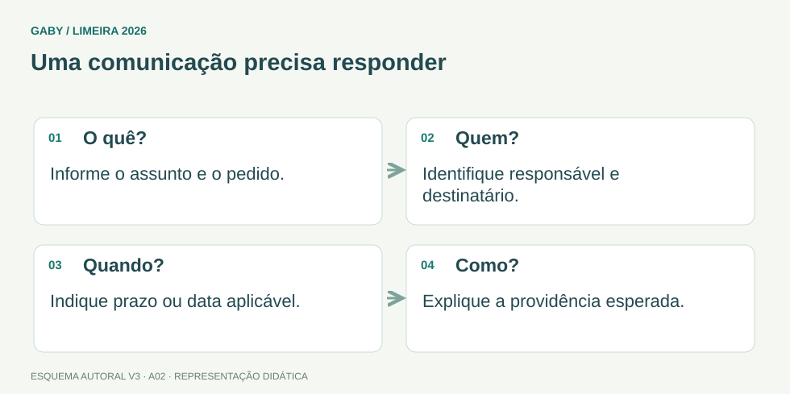

Objetivos do módulo
- Entender finalidade e estrutura básica de documentos administrativos.
- Diferenciar ata, ofício, memorando e formulário.
- Interpretar organogramas e fluxogramas como ferramentas de organização.
Uma comunicação precisa responder

Descrição em texto do esquema
- O quê?: Informe o assunto e o pedido.
- Quem?: Identifique responsável e destinatário.
- Quando?: Indique prazo ou data aplicável.
- Como?: Explique a providência esperada.
Oficina visual · aplique o esquema
Melhore: “Favor resolver isso logo.” Considere a conferência de uma planilha até sexta-feira.
Atividade autoral complementar da V3. Registre sua resposta; a resolução está no arquivo de gabarito e revisão.
Mapa do conteúdo
1. Rotina administrativa
Rotina administrativa é o conjunto de procedimentos repetidos que mantém o fluxo de trabalho: receber demandas, registrar, distribuir, acompanhar, arquivar e comunicar resultados. Uma boa rotina define responsabilidades, prazos, registros e pontos de controle.
2. Ata
Ata registra acontecimentos e deliberações de reunião. Deve permitir reconstruir o que ocorreu: data, local, participantes ou quórum conforme prática adotada, assuntos, decisões e encerramento. O foco é fidelidade e clareza, evitando opiniões pessoais do redator.
3. Ofício e memorando
Ofícios são comunicações oficiais formais entre unidades, autoridades ou destinatários externos conforme a organização. Memorandos são tradicionalmente associados à comunicação interna. A terminologia pode variar em sistemas modernos, por isso em prova é importante seguir o conceito indicado pelo edital/contexto.
4. Formulários, tabelas e planilhas
Formulários padronizam coleta de dados. Tabelas organizam informação em linhas e colunas. Planilhas permitem cálculos, registros e acompanhamento. Padronização reduz omissões e facilita conferência.
5. Organograma e fluxograma
Organograma representa estrutura organizacional e relações de subordinação/coordenação. Fluxograma representa sequência de etapas, decisões e caminhos de um processo. Não confunda estrutura “quem responde a quem” com fluxo “o que acontece depois”.
| Ferramenta | Representa |
|---|---|
| Organograma | estrutura e relações organizacionais |
| Fluxograma | sequência e decisões de um processo |
| Formulário | campos padronizados para coleta |
| Planilha | dados tabulares e cálculos/acompanhamento |
Exemplos resolvidos passo a passo
Exemplo 1
Situação: Reunião decide novo horário e responsáveis. Qual documento registra a deliberação?
Exemplo 2
Situação: Setor quer mapear caminho “recebe pedido → confere → devolve se incompleto → protocola”.
Exemplo 3
Situação: Gestor quer mostrar Diretoria > Gerências > Seções.
Pegadinhas e erros frequentes
- Transformar ata em texto opinativo.
- Confundir organograma com fluxograma.
- Criar formulário sem campos essenciais ou sem padronização.
- Usar linguagem ambígua em documento administrativo.
Resumo de prova
- Ata registra reunião e deliberação.
- Ofício é comunicação oficial formal.
- Memorando é tradicionalmente comunicação interna.
- Formulário padroniza coleta.
- Organograma = estrutura; fluxograma = processo.
Exercícios do módulo
Resolva sem consultar o arquivo de gabarito. As questões são autorais e construídas para treinar os conceitos do edital.
- ata
- nota fiscal
- estoque
- balancete
Fonte: Presidência da República — Manual de Redação, 3ª edição.
- organograma
- ata
- ofício
- fluxograma
Fonte: Presidência da República — Manual de Redação, 3ª edição.
- formulário
- recibo
- organograma
- fluxograma
Fonte: Presidência da República — Manual de Redação, 3ª edição.
- dispensar registros
- uniformizar coleta de dados
- eliminar qualquer conferência
- substituir toda comunicação
Fonte: Presidência da República — Manual de Redação, 3ª edição.
- fidelidade e clareza
- opinião pessoal do redator
- linguagem vaga
- publicidade de pessoas
Fonte: Presidência da República — Manual de Redação, 3ª edição.
- apenas desenho de hierarquia
- somente texto jurídico
- substituir arquivo físico sempre
- controle tabular e cálculos
Fonte: Presidência da República — Manual de Redação, 3ª edição.
- quanto há em estoque?
- qual o saldo bancário?
- como a organização está estruturada?
- qual a próxima etapa do processo?
Fonte: Presidência da República — Manual de Redação, 3ª edição.
- qual a senha?
- qual caminho o processo percorre?
- quem ocupa cada cargo apenas?
- qual o salário?
Fonte: Presidência da República — Manual de Redação, 3ª edição.
- ambiguidade
- clareza
- padronização
- registro
Fonte: Presidência da República — Manual de Redação, 3ª edição.
- nota fiscal
- arquivamento permanente
- controle de estoque
- comunicação interna
Fonte: Presidência da República — Manual de Redação, 3ª edição.
Quando terminar, abra Assistente Administrativo 02 - Rotinas Administrativas e Redação Técnica - Gabarito e Revisão.
Checklist de domínio
- ☐ Entender finalidade e estrutura básica de documentos administrativos.
- ☐ Diferenciar ata, ofício, memorando e formulário.
- ☐ Interpretar organogramas e fluxogramas como ferramentas de organização.
Meta do módulo: 80% ou mais nas questões, sem depender de consulta.
Referências e conteúdos auxiliares
- Presidência da República — Manual de Redação, 3ª ediçãoClareza, redação oficial, concordância, regência e pontuação. Referência de apoio; modelos locais podem ter regras próprias.
Referências externas de apoio consultadas para a V3 em 27/09/2026. A origem das questões é o material autoral do projeto; estes links não indicam que uma instituição publicou ou validou os exercícios. As páginas externas precisam de internet. Em informática, confira a versão do programa; em legislação, observe o recorte e as regras de atualização do edital.